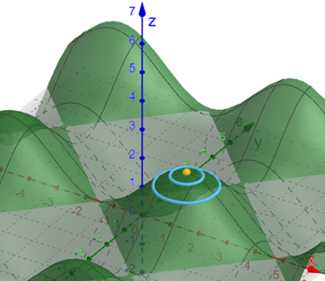
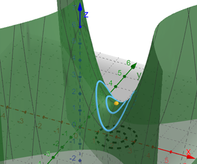

On this page, you will learn to:
- Find critical points of functions of two variables.
- Use the Second Derivative Test to determine if a critical point is a local max or min.
- Find absolute extrema on closed regions.
Recall back to learning about derivatives in Calc 1. One of the biggest applications of the derivative was finding when the slope of the tangent line equals 0 because this located potential maximum or minimum values of the function. We did this for a function \(y = f(x)\) by finding any critical points \(c\) where \(f'(c) = 0\). We then used either the 1st or 2nd Derivative Test to check whether the critical point gave us a relative maximum or minimum. In particular, the 2nd Derivative Test said that the function had a maximum if \(f^{\prime\prime}(c) \lt 0\) because the graph would be concave down, a minimum if \(f^{\prime\prime}(c) \gt 0\) because the graph would be concave up, or the test was inconclusive if \(f^{\prime\prime}(c) = 0\), usually because we had a saddle point.
We can do roughly the same thing for functions \(f(x,y)\) using its partial derivatives and a 2nd derivatiave test. Let's first redefine what we mean by a local maximum or minimum of a function.
Suppose \((a,b)\) is a point in the domain of the function \(z = f(x,y)\).
- If \(f(x,y) \le f(a,b)\) for all \((x,y)\) in the domain of \(f\) and in some open disk centered at \((a,b)\), then \(f(a,b)\) is a local maximum value of \(f\).
- If \(f(x,y) \ge f(a,b)\) for all \((x,y)\) in the domain of \(f\) and in some open disk centered at \((a,b)\), then \(f(a,b)\) is a local minimum value of \(f\).

In the illustration above, the orange point is a local maximum because it is the highest point within any of the blue circles centered around the point. In the illustration below, the orange point is neither a local maximum nor minimum since there are points of \(f\) that are higher and lower within each circle. We would call this point a saddle point.

The first step to finding the local extrema was to find any critical points. Back in Calc 1, a critical point \(c\) in the domain of a function \(y = f(x)\) was where \(f'(c) = 0\) or \(f'(c)\) was undefined. Let's extend this to 2-variable functions.
A critical point, or stationary point, in the domain of the function \(z = f(x,y)\) is a point \((a,b\)) where both \(f_x(a,b) = 0\) and \(f_y(a,b) = 0\) or where either \(f_x(a,b)\) or \(f_y(a,b)\) does not exist.
If \(f\) has a local maximum or minimum value at a point \((a,b)\) and the partial derivatives exist at \((a,b)\), then we know \(f_x(a,b) = 0\) and \(f_x(a,b) = 0\). Note that this does not mean that finding where a derivative is 0 will guarantee that we also found a local maximum or minimum value, but rather it just guarantees that if there is one the it will be located at a point where the tangent lines are horizontal.
The 2nd Derivative Test
Once we have located any critical points, we can determine whether they represent a local maximum, local minimum, or saddle point using the 2nd Derivative Test.
Suppose the second partial derivatives of \(f\) are continuous throughout an open disk centered at the point \((a,b)\) where \(f_x(a,b) = f_y(a,b) = 0\). The descriminant of \(f\) at \((a,b)\) is defined by the following formula.
\[D(a,b) = f_{xx}(a,b) \cdot f_{yy}(a,b) - {\left( f_{xy}(a,b) \right)}^2\] Based on the resulting values of the descriminant at the critical point, we can make the following conclusion about \(f\) at the critical point.- If \(D(a,b) \gt 0\), then \(f\) has a local maximum value at \((a,b)\) if \(f_{xx}(a,b) \lt 0\).
- If \(D(a,b) \gt 0\) and \(f_{xx}(a,b) \gt 0\), then \(f\) has a local minimum value at \((a,b)\).
- If \(D(a,b) \lt 0\), then \(f\) has a saddle point at \((a,b)\).
- If \(D(a,b) = 0\), then the test is inconclusive.
To summarize the results of the test, if the descriminant is positive then we can be positive that \(f\) has a local maximum or minimum. We just need to check the sign of \(f_{xx}\) to find its concavity. If the descriminant is negative, then it is a saddle point.
Absolute Extrema
Back in Calc I, we also looked at finding absolute extrema on a closed interval. In fact, every continuous function \(y = f(x)\) will have an absolute maximum and absolute minimum over a bounded interval \([a,b]\). These absolute extrema occur either at the critical points or at the endpoints of the interval. Now let's extend this idea to functions of two variables.
Let \(f\) be defined on a closed domain \(D\) in \(\mathbb{R}^2\) containing the point \((a,b)\).
- If \(f(x,y) \le f(a,b)\) for all \((x,y)\) in \(D\), then \(f(a,b)\) is an absolute maximum value of \(f\) on \(D\).
- If \(f(x,y) \ge f(a,b)\) for all \((x,y)\) in \(D\), then \(f(a,b)\) is an absolute minimum value of \(f\) on \(D\).
The following GeoGebra applet will help illustrate the absolute extrema of a function \(z = f(x,y)\). You may also click-and-drag to rotate the view around the origin.
- The graph shows the blue surface of f(x,y).
- The boundary is the closed, bounded region of the triangle formed by the lines \(y=0\), \(x=5\), and \(y=x\).
- Select the Show All Points option. There are 7 orange points that appear on the graph: 1 inside the triangle, 1 at each of the 3 corners, and 1 on each of the 3 sides. The single point inside the triangle at \((4,1)\) is the only critical point of \(f\) since that is the only point where the tangent plane would be horizontal. The 3 corner points are just the intersections of the 3 linear equations. The points on the 3 sides are the critical points of \(f\) along the boundary of the function.
- Unselect the Show All Points option and select the Show Max Only and Show Min Only options. Now only 3 points appear. The absolute maximum is \(6.5\), which occurs at the points \((0, 0, 6.5)\) and \((5, 5, 6.5)\). The absolute minimum is \(-2\), which occurs at the point \((4, 1, -2)\).
What you should observe from the above illustration is that the absolute extrema can occur at a critical point of the function \(f(x,y)\), at an intersection of the boundary curves, or at a critical point along the boundary. To find the points along the boundary, we need to define a function of one variable that describes the curve formed by intersecting the surface function \(f\) with the boundary planes.
If \(f\) is continuous on a closed, bounded set \(D\) in ℝ2, then \(f\) has both an absolute maximum and minimum on \(D\). We can use the following process to find the absolute maximum and minimum values of \(f\) on \(D\).
- Determine the values of \(f\) at all critical points in the interior of \(D\).
- Find the maximum and minimum values of \(f\) on the boundary of \(D\). The boundaries can include along the boundary curves and at the intersection(s) of any boundary curves
- Compare the values you found for steps #1 and #2. The absolute maximum is the largest value and the absolute minimum is the smallest value.
The following videos demonstrate how to find the absolute maximum and absolute minimum values of a function over a closed and bounded region.
These last two videos work through a couple applications of extrema.